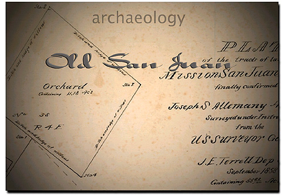

Screen 1: The first screen that greets the viewer of
"Old San Juan" consists of a movie intro with an animated title sequence.
Viewers have the option of clicking off of the intro and going directly
into the main menu or viewing the credits at the outset.
Text, Photographs, and Multimedia
Copyright Ruben G. Mendoza, 2000
Back Forward